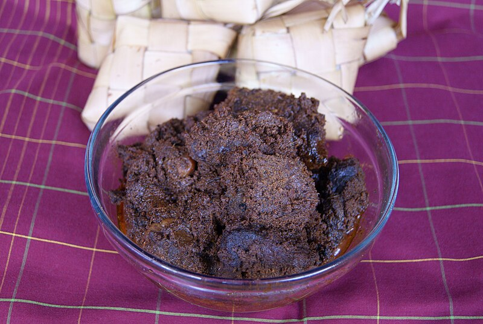

Another Beef Rendang Recipe

From Wikipedia: Rendang (/rɛnˈdæŋ/; Indonesian pronunciation: [ˈrəndaŋ]) is a Minangkabau dish. It is a rich meat dish that has been slow cooked and braised in a coconut milk and seasoned with a herb and spice mixture over a period of several hours until the liquids evaporate, and the meat turns dark brown and tender, becoming caramelized and infused with rich flavours.¹
This meal often pairs well with long grain rice. It is definitely one of my favorite foods due to how the textures of the meat blending in very well and how great the flavors are. Many regions of Indonesia often have their ways of creating rendang, but rendang will always involve meat (especially beef), coconut milk, and chili. The recipe listed is from another website since we often do not keep recipes in the kitchen. Credits to RecipeTin Eats for providing the webpage.²
Ingredients used:
- Spice paste:
- Rehydrated dried chilies
- Finely chopped small onion
- Garlic cloves
- Lemongrass stalks
- Fresh galangal
- Fresh ginger
- Oil (vegetable, canola, or peanut)
- Curry:
- Chuck steak, or other slow cooking beef, cut into small cubes
- Oil (vegetable, canola, or peanut)
- Cinnamon stick
- Clove powder
- Star anise
- Cardamon powder
- Lemongrass stick, bottom half only
- Coconut milk
- Tamarind puree/paste
- Kaffir lime leaves
- Desiccated coconut
- Salt
Instructions:
- Blend the spice paste ingredients in a food processor until fine.
- Apply 1 tbsp of oil in a large heavy based pot over high heat. Add beef and brown, then set beef onto plate.
- Lower heat to medium low. Add spice paste to pit and cook for around 2-3 minutes until the spice paste darkens.
- Add remaining curry ingredients and beef to the pot and stir.
- Bring pot to simmer, them turn down the heat to low or medium low.
- Cover the pot with a lid and let ingredients simmer for around 1 hour and 15 minutes.
- Remove lid and inspect the tenderness of the beef. The beef should be a bit tender but it should not be very tender.
- Turn up the heat to medium and stir every so often that the sauce coats the beef like a paste.
- If beef is very tender at this stage, remove pot from heat and serve.
References:
- Wikipedia contributors. (2024, February 3). Rendang. Wikipedia. https://en.wikipedia.org/wiki/Rendang
- Nagi, & Nagi. (2021, November 11). Beef rendang. RecipeTin Eats. https://www.recipetineats.com/beef-rendang